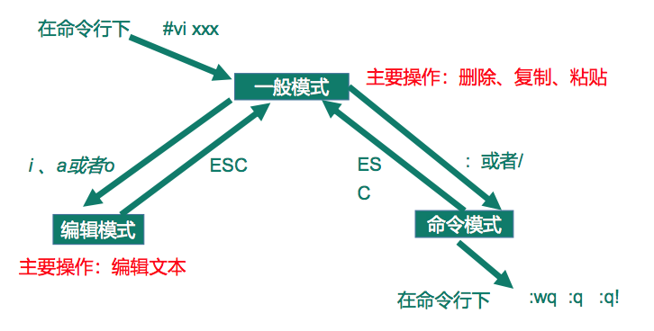
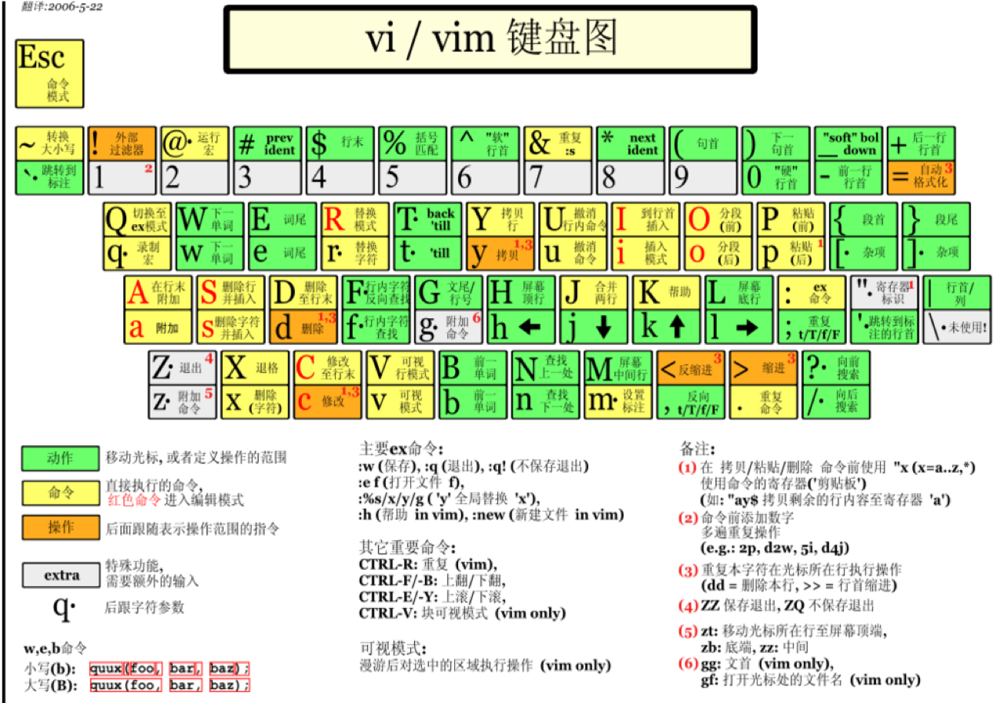

vi是Unix操作系统和类Unix操作系统中最通用的文本编辑器。vim编辑器是从vi发展出来的一个性能更强大的文本编辑器。可以主动的以字体颜色辨别语法的正确性，方便程序设计。vim与vi编辑器完全兼容。
vi和vim常用的三种模式
一般模式
以vi打开一个档案就直接进入一般模式了（这是默认的模式）。在这个模式中，你可以使用『上下左右』按键来移动光标，你可以使用『删除字符』或『删除整行』来处理档案内容，也可以使用『复制、贴上』来处理你的文件数据。
- 常用语法
| 语法 | 描述 |
|---|---|
| yy | 复制光标当前一行 |
| y数字y | 复制一段（从第几行到第几行） |
| p | 箭头移动到目的行粘贴 |
| u | 撤销上一步 |
| dd | 删除光标当前行 |
| d数字d | 删除光标（含）后多少行 |
| x | 删除一个字母，相当于del |
| X | 删除一个字母，相当于Backspace |
| yw | 复制一个词 |
| dw | 删除一个词 |
| shift+^ | 移动到行头 |
| shift+$ | 移动到行尾 |
| 1+shift+g | 移动到页头，数字 |
| shift+g | 移动到页尾 |
| 数字+shift+g | 移动到目标行 |
编辑模式
在一般模式中可以进行删除、复制、粘贴等的动作，但是却无法编辑文件内容的！要等到你按下『i, I, o, O, a, A, r, R』等任何一个字母之后才会进入编辑模式。
注意了！通常在Linux中，按下这些按键时，在画面的左下方会出现『INSERT或 REPLACE』的字样，此时才可以进行编辑。而如果要回到一般模式时， 则必须要按下『Esc』这个按键即可退出编辑模式。
- 进入编辑模式常用语法
| 按键 | 描述 |
|---|---|
| i | 当前光标前 |
| a | 当前光标后 |
| o | 当前光标行的下一行 |
| I | 光标所在行最前 |
| A | 光标所在行最后 |
| O | 当前光标行的上一行 |
- 退出编辑模式，按『Esc』键退出
命令模式
在一般模式当中，输入『 : / ?』3个中的任何一个按钮，就可以将光标移动到最底下那一行。在这个模式当中，可以提供你『搜寻资料』的动作，而读取、存盘、大量取代字符、离开vi、显示行号等动作是在此模式中达成的！
基本语法
| 按键 | 描述 |
|---|---|
| :w | 保存 |
| :q | 退出 |
| :! | 强制退出 |
| /要查找的词 | n查找下一个，N往上查找 |
| ?要查找的词 | n查找上一个，shift + n是往下查找 |
| :set nu | 显示行号 |
| :set nonu | 关闭行号 |
vi和vim模式的相互切换

vi|vim键盘图
